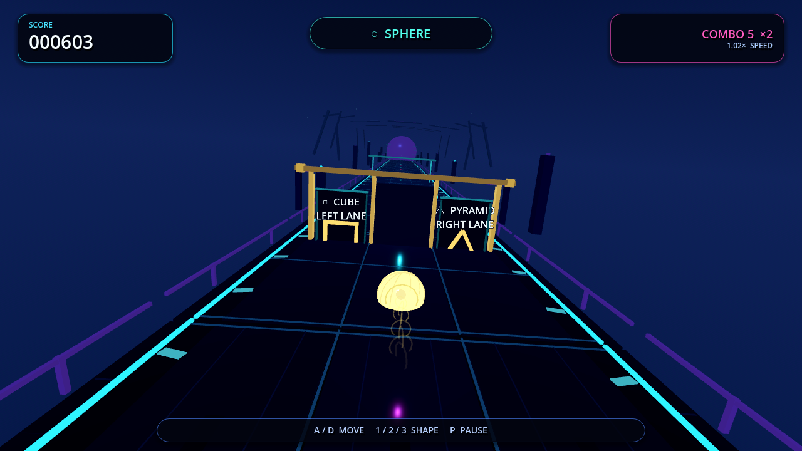
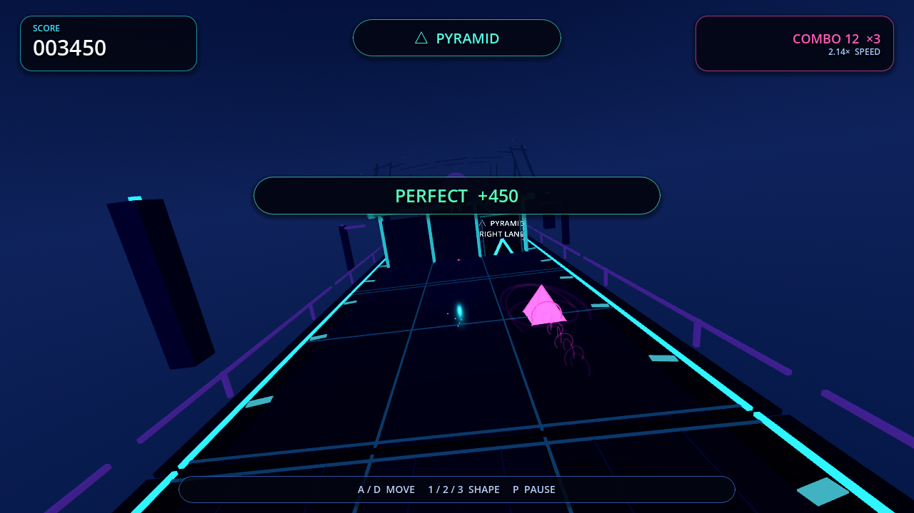
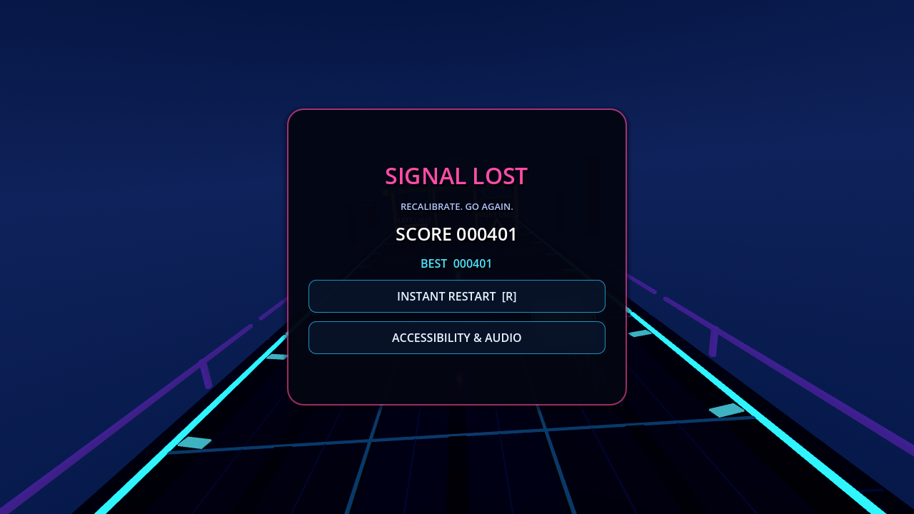

Automated checks
10,129
all passing, including all nine lane/form pairs
The 2018 flat portrait prototype is now a parser-clean Godot 4.7 3D neon runner. This workbench records direct artifact evidence; critic findings and repairs are appended to GAUNTLET.md.

| Contract | Target |
|---|---|
| Lane settle | 156 ms |
| Logical morph | same tick |
| Visual morph | 108 ms |
| Telegraph | ≥1.25 s |
| Gate pool | 10 bounded |

The actionable gate retains full labels and structure while distant gates collapse to depth cues. The 28 px/22 px HUD safe area remains intact at 2.14× base speed.
Music and sound impact rose to 8 with no critical or high defect. Round 5 addresses the sole remaining below-threshold category through composed upper infrastructure, richer road/gate/player materials, and a safe-area HUD rebuild.
| Capture | Peak | Stereo difference RMS |
|---|---|---|
| Drift | −11.35 dBFS | .0259 |
| Drive | −11.07 dBFS | .0318 |
| Apex | −10.18 dBFS | .0397 |
| Fail / restart | −11.32 dBFS | .0267 |
Low · Drift
Mid · Drive
High · Apex
Failure · restart
The first rich visual integration regressed to 53.80 ms p95. Staggered road detail plus allocation-free gate and 100-spark pools restored the five-minute 30 u/s soak to 16.67 ms p95. Restart p95 is 0.985 ms across 20 real results-state cycles.

Second fresh critic: 9 · 8 · 9 · 8 · 8 · 8 · 8 · 8 · 9 · 8. No material gap and no critical/high defect. Two consecutive independent passes, clean launch/tests/loop, and the five-minute soak satisfy the bounded stopping condition.